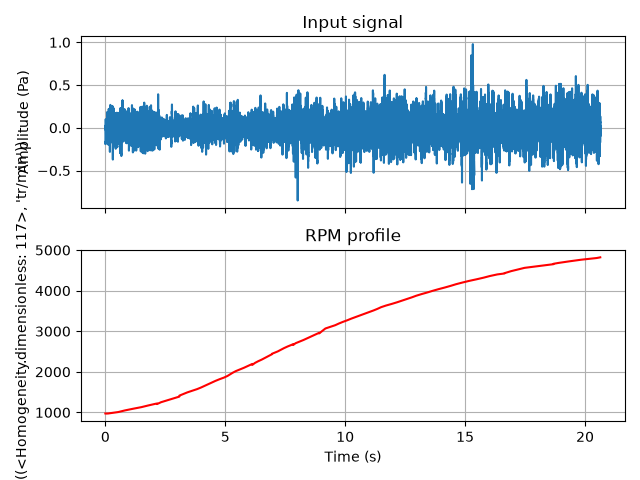
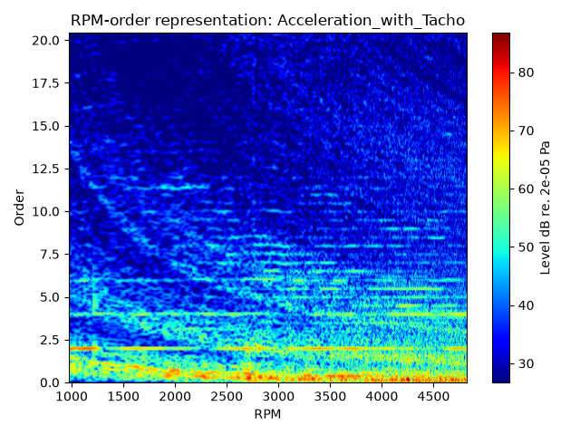
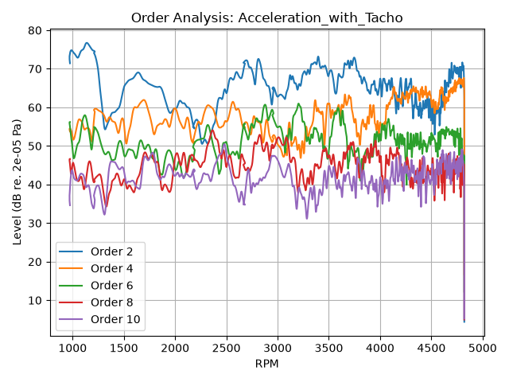
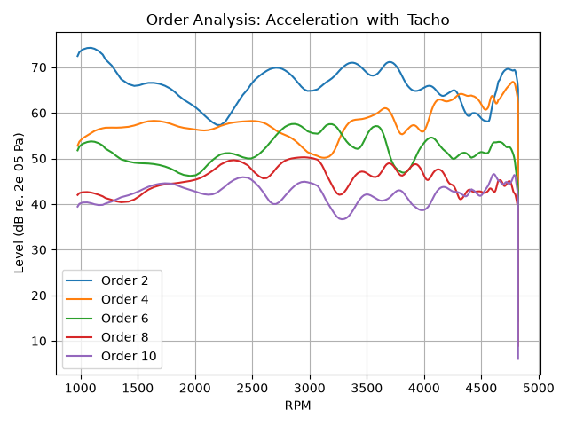

Note
Go to the end to download the full example code.
Compute order levels#
This example shows how to compute the levels over RPM of a list of orders using the
OrderLevels class from a vibro-acoustic measurement, of a rotating machinery typically,
together with the related tachometric information. Orders are harmonic components of a sound or
vibration that are related to the rotational speed of a machine.
The example also illustrates the effects of the parameters
order_resolution and order_width on the computed order
levels: the order levels are extracted from an intermediate RPM-order representation (see
RpmOrderRepresentation), whose order resolution directly influences both the RPM and
level accuracy of the final result.
See also
- Synthesize harmonics source from order analysis
Example demonstrating how to synthesize the sound of a harmonics source from an order analysis.
Set up analysis#
Setting up the analysis consists of loading the required libraries, connecting to the DPF server, and downloading the necessary data files.
# Load standard libraries.
import matplotlib.pyplot as plt
# Load Ansys libraries.
from ansys.sound.core import REFERENCE_ACOUSTIC_PRESSURE_IN_AIR
from ansys.sound.core.examples_helpers import download_accel_with_rpm_wav
from ansys.sound.core.order_analysis import OrderLevels
from ansys.sound.core.server_helpers import connect_to_or_start_server
from ansys.sound.core.signal_utilities import LoadWav
# Connect to a remote DPF server or start a local DPF server.
my_server, my_license_context = connect_to_or_start_server(use_license_context=True)
# Download the necessary file for this example.
path_accel_wav = download_accel_with_rpm_wav()
Load a signal with its RPM profile#
Load the previously downloaded WAV file. It contains two channels:
the actual signal (an acceleration recording of the sound pressure in a car),
the associated RPM profile of the engine, in rev/min.
wav_loader = LoadWav(path_accel_wav)
wav_loader.process()
signal, rpm_profile = wav_loader.get_output()
# Plot the signal and its associated RPM profile
time = signal.time_freq_support.time_frequencies
fig, ax = plt.subplots(nrows=2, sharex=True)
ax[0].plot(time.data, signal.data)
ax[0].set_title("Input signal")
ax[0].set_ylabel(f"Amplitude ({signal.unit})")
ax[0].grid(True)
ax[1].plot(time.data, rpm_profile.data, color="red")
ax[1].set_title("RPM profile")
ax[1].set_ylabel(f"Speed ({rpm_profile.unit})")
ax[1].grid(True)
plt.xlabel(f"Time ({time.unit})")
plt.tight_layout()
plt.show()

Compute order levels with a coarse order resolution#
Let us compute the levels over RPM for orders 2, 4, 6, 8, and 10, which are the dominant orders in a four-cylinder engine.
orders = [2, 4, 6, 8, 10]
order_levels_coarse = OrderLevels(
signal=signal,
rpm_profile=rpm_profile,
orders=orders,
order_width=50.0,
order_resolution=4.0,
)
order_levels_coarse.process()
In this first example, we use a coarse order_resolution value of 4 %.
This means the order axis is divided into increments of 4 % of order. Note that, since this
method relies on the short-time Fourier transform, a coarser order resolution yields a finer RPM
resolution.
The order_width attribute defines the range around each requested order
over which the energy is integrated to obtain its order level. The value of 50 % set here is
sufficient in most cases, but it may need to be adjusted depending on the specific signal
characteristics, such as the presence of background noise, the proximity and magnitudes of
neighboring orders, and the slope of the RPM profile curve.
Display the RPM-order representation of the signal#
The order levels are extracted from an intermediate RPM-order representation. It is similar to a spectrogram, except the vertical axis represents order instead of frequency, and the horizontal axis, RPM instead of time.
order_levels_coarse.plot_rpm_order_representation(
display_in_dB=True, reference_value=REFERENCE_ACOUSTIC_PRESSURE_IN_AIR
)

The order magnitudes appear as horizontal lines, which makes it easy to see how energy is
distributed across orders as RPM changes. The RPM-order representation also helps to adjust the
value of order_width as it shows how order energy is spread around each
order, with respect to the background noise and other orders’ proximity.
Note: this representation is directly available from the OrderLevels object, so there is
no need to compute it again with the RpmOrderRepresentation class.
Plot the order levels#
A coarse order resolution means that fewer signal samples are needed to compute each point of the RPM-order representation. As a consequence, the RPM step between two successive computed levels is small: the resulting curves are precise in RPM, but with important level fluctuations, because each level is estimated over a short portion of the signal.
order_levels_coarse.plot(display_in_dB=True, reference_value=REFERENCE_ACOUSTIC_PRESSURE_IN_AIR)

Compute order levels with a fine order resolution#
Now let us repeat the same analysis, keeping the same order width (50 %), but with a much finer order resolution of 0.5 %.
order_levels_fine = OrderLevels(
signal=signal,
rpm_profile=rpm_profile,
orders=orders,
order_width=50.0,
order_resolution=0.5,
)
order_levels_fine.process()
order_levels_fine.plot(display_in_dB=True, reference_value=REFERENCE_ACOUSTIC_PRESSURE_IN_AIR)

Compare the number of RPM values obtained in both cases: a finer order resolution results in fewer RPM values being used in the analysis.
print(f"Order resolution 4 %: {len(order_levels_coarse.get_rpm_scale())} RPM values.")
print(f"Order resolution 0.5 %: {len(order_levels_fine.get_rpm_scale())} RPM values.")
Order resolution 4 %: 1762 RPM values.
Order resolution 0.5 %: 224 RPM values.
With a fine order resolution, more signal samples are required to estimate each point of the RPM-order representation. As a consequence, the RPM step is larger, and fewer RPM values are used. The resulting curves are smoother, but less precise in RPM.
In practice, the order resolution is a trade-off:
smooth and well-separated order levels are obtained using a fine order resolution. This is typically used on slow run-ups,
a coarser order resolution is preferred to follow rapid level variations, to the detriment of the order precision. Typically used on fast run-ups.
Total running time of the script: (1 minutes 57.613 seconds)